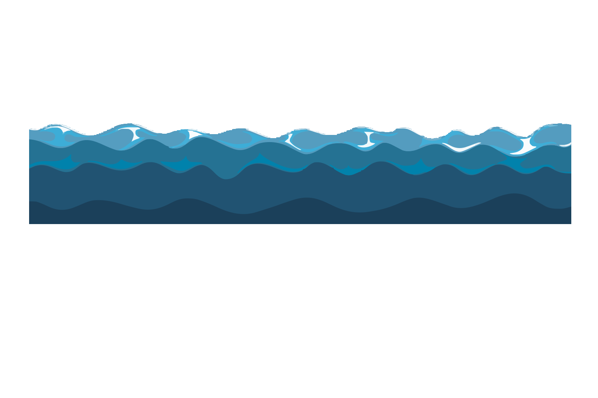

Whales are one of the largest mammals ever to have lived on Earth, these majestic creatures spend their entire lives in the open ocean and often dive more than two kilometers below the surface to feed. In doing so these whales can remain underwater and hold their breath for over an hour. In the world there are over 90 unique whale and dolphin species, around 45 of which call Australian waters home. All whales traverse the world through Blue corridors, which are the migratory routes that whales will follow to move between feeding, breeding and social places. The Humpback and Blue whales namely travel the same path along Australia's east and west coasts, often being spotted by people. Unfortunately because these corridors overlap with human activities such as shipping, this ultimately puts whale populations at risk. That is why it is evermore important to identify new solutions and create policies that can protect critical whale habitats around Australia.
Due to the way whales exist, they spend a majority of their time deep underwater. As a result it is quite difficult to measure and take census of different whale species. Scientists use a combination of field surveys, photo-identification, genetic sampling, acoustic monitoring and computer modelling to estimate current whale populations. This helps inform the public on the growth and progress of whale conservation.
Whales eat a variety of species across the entire food chain, ranging from tiny krill up to giant and colossal squids found only at depth. Blue whales, one of the biggest in the world, eat up to 16 metric tons of krill and zooplankton every single day to sustain themselves. These underwater mammals are magnitudes larger than us humans and one of the most common cars in the world: a Toyota Corolla.
The dolphin species are a smaller species of whale, with currently 42 species of dolphins and 7 species of porpoises. What differentiates them from larger whale species are their wide array of vocalisations such as clicks, whistles and squeals which are used for their echolocation and communication skills. As such these very intelligent animals have a very developed social societies. Typically only swimming in pods of 2-15 individuals, these can temprarily expand into much larger superpods of 40 and upwards to 1000. As such we can observe many of their behaviours across the entirety of Australia's coastline.
Even though dolphins are much more common than observing whales, seeing a pod of dolphins breach the water is rarer as in the wild dolphins are cautious towards human activity. However during COVID in 2020, when the world plunged into lockdown a dramatic drop in human activity, boat traffic and underwater noise made coastal waters much calmer and quieter. This more favourable environment lead to a greater population of dolphins been spotted along Victoria's coastline.
Sea turtles are descendants of a very prehistoric lineage, having existed for more than 120 million years ago on Earth since the cretaceous period. What makes them so unique are that sea turtles cannot retract into their shell unlike their freshwater turtle counterparts. Similarly so, sea turtles have a lifespan of well over 70 years and spend the vast majority of their time migrating. During their breeding season, female sea turtles will return to the same beach where they hatched and lay eggs for a new generation of sea turtles. As a result the coast of Queensland have many different sea turtle nests and are all important in the conservation of all sea turtle species.
Of the 7 sea turtle species, 6 of which are native to Australia's marine environment. Sadly 85% of all sea turtle species are threatened. Their decline in population can be linked to entanglement due to fisheries, shrinking of natural sea turtle coastline habitats, pollution and plastic poisoning, illegal and black-market trade; climate change.